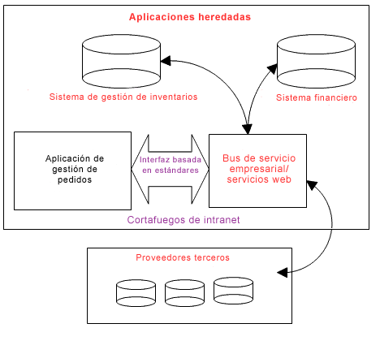

Introducción
La complejidad es una cuestión central en el desarrollo de software. Elevar el nivel de abstracción
ayuda a reducir la complejidad y la cantidad de documentación que necesita el proyecto. Esto puede
lograrse mediante la reutilización, el uso de herramientas de modelado de alto nivel, y la
estabilización temprana de la arquitectura.
|
|
|
Ventajas
|
-
Productividad
-
Menor complejidad.
|
|
Patrón
|
-
Reutilizar los activos existentes
-
Utilizar herramientas y lenguajes de alto nivel para reducir la cantidad de
documentación que se produce
-
Centrarse primero en la arquitectura
-
Elaborar una arquitectura dirigida a la elasticidad, la calidad, la inteligibilidad
y el control de la complejidad.
|
|
Antipatrones
|
-
Para ir directamente de los requisitos más vagos, de más alto nivel, al código
hecho a medida:
-
Como se utilizan pocas abstracciones, muchas discusiones se realizan en el
nivel de código en lugar de en un nivel más conceptual, con lo que se
pierden muchas oportunidades de reutilización, entre otras cosas.
-
Los requisitos capturados de manera informal y otros datos precisan que se
repasen una y otra vez las decisiones y las especificaciones
-
Un énfasis limitado en la arquitectura hace necesaria una actualización muy
importante en fases posteriores del proyecto.
|
|
Discusión
Uno de los principales problemas con los que se enfrenta el desarrollo de software es la complejidad. Se sabe que si se
reduce la complejidad, el impacto sobre la productividad es muy importante. Si se trabaja en un nivel más alto de
abstracción se reduce la complejidad y se facilita la comunicación.
Un enfoque eficaz de cara a reducir la complejidad es la reutilización de activos existentes, como los
componentes reutilizables, los sistemas heredados, los procesos empresariales existentes, los patrones o el software de
código abierto. Dos buenos ejemplos de reutilización que han tenido un gran impacto en el sector del software en la
última década han sido:
-
La reutilización del middleware, como las bases de datos, los servidores y los portales web y, más
recientemente,
-
El software de código abierto que proporciona muchos componentes más pequeños y más grandes que pueden
optimizarse.
Más adelante, es posible que los servicios web tengan un impacto muy importante sobre la reutilización, ya que
proporcionan formas sencillas de reutilizar partes grandes de la funcionalidad en diversas plataformas y con una
relación menos estricta entre el consumidor y el proveedor de un servicio. Esto significa que podemos optimizar más
fácilmente las distintas combinaciones de servicios para abordar las necesidades de la empresa. La reutilización
también se ve facilitada por los estándares abiertos, como RAS, UDDI, SOAP, WSDL, XML y UML.

Reutilización de los activos existentes mediante las arquitecturas orientadas a servicios.
Uno de los problemas de la reutilización es que dos componentes necesitan conocer su existencia mutuamente durante
el tiempo de desarrollo. Las arquitecturas orientadas a servicios alivian ese problema al proporcionar lo que se
denomina un acoplamiento poco estricto: un consumidor de un servicio puede buscar dinámicamente un proveedor de un
servicio. Por tanto podemos incorporar componentes o sistemas heredados en servicios, con lo que se permite a otros
componentes o aplicaciones acceder dinámicamente a sus capacidades mediante una interfaz basada en estándares,
independiente de la plataforma y de la tecnología de implementación.
Otro enfoque para reducir la complejidad y mejorar la comunicación consiste en optimizar las herramientas de alto
nivel, las infraestructuras y los lenguajes.
-
Lenguajes estándar como el lenguaje de modelado unificado (UML) y los lenguajes de aplicación
rápida, como EGL, proporcionan la capacidad de expresar constructos de alto nivel, como los procesos empresariales
y los componentes de servicio, que facilitan la colaboración en torno a los constructos de alto nivel a la vez
que ocultan detalles innecesarios.
-
Las herramientas de diseño y construcción pueden automatizar el paso de los constructos de nivel
alto al código que funciona:
-
-
Proporcionan asistentes que automatizan las tareas de diseño, construcción y prueba al generar
código y permitir el uso de fragmentos de código,
-
Convierten la integración y las pruebas en tareas de desarrollo homogéneas mediante entornos
integrados de desarrollo, compilación y prueba.
-
Herramientas de gestión de cartera, que permiten la gestión de aspectos financieros y de
otros tipos en varios proyectos como una única entidad en vez de como un conjunto de entidades distintas.
En resumen, las herramientas de alto nivel capturan gráficamente la información de modelado clave, que es una forma
sólida y atractiva de resumir y presentar esta información. Las ventajas del modelado visual se exploran con más
detalle en Material de soporte: Modelado visual.
Un tercer enfoque a la gestión de la complejidad es centrarse en la arquitectura, sea para definir un negocio,
o para desarrollar un sistema o aplicación. En el desarrollo de software, se intenta conseguir que la arquitectura esté
diseñada, implementada y probada en las primeras fases del proyecto. Eso significa que, en las primeras fases del
proyecto, nos centraremos en los objetivos siguientes:
-
Definir los bloques de construcción de alto nivel y los componentes más importantes, sus responsabilidades y
sus interfaces.
-
Diseñar e implementar los mecanismos de la arquitectura, es decir, las soluciones preparadas para problemas
habituales, como el tratamiento de la permanencia o la recopilación de basura.
Si se consigue establecer una arquitectura adecuada desde el principio, se obtiene una estructura que es el esqueleto
del sistema, lo que facilita la gestión de la complejidad a medida que añadimos más personas, componentes, funciones y
código al proyecto. Asimismo se identifican los activos reutilizables que se pueden optimizar, y los aspectos del
sistema que necesitan una construcción personalizado.
|